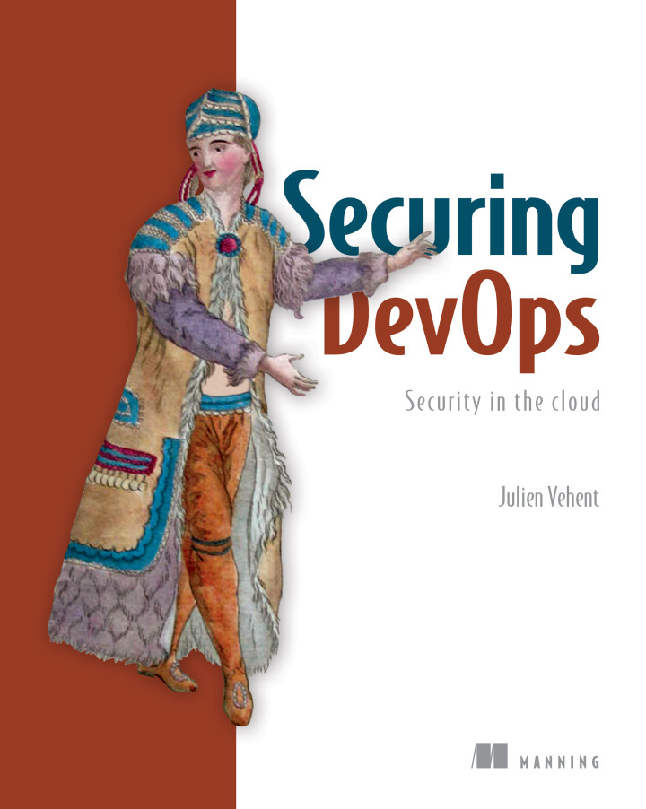

Modern Web Application Security
A hands-on guide to staying out of
(the wrong kind of) news
Slides at
jvehent.github.io/modern-webappsec/
$whoami
- Firefox Operations Security
- Security tools coder
- Author of Securing DevOps
- @jvehent on twitter
Story time
Poor webappsec is a costly risk
And the #1 source of data breaches
The Good
- HTTPS usage is going up! (>70% of page loads)
- Frameworks are adopting safe defaults
The Bad
- Modern controls (Cookies, CSP, HSTS, SRI) are not adopted
- Secure cookies at 9%, HSTS at 6%, CSP and SRI at ~0.1% 😞
The Ugly
|
Dependency management (supply chain) is a complete garbage fire |
Modern WebAppSecin seven steps |
|
#1. Use HTTPS
A pre-requisite to any website built today
#1. Use HTTPS
Latest browser features require secure contexts
#1. Use HTTPS
Use Let's Encrypt!
#1. Use HTTPS
Test your HTTPS
Many web servers and providers now have safe defaults, but always verify
#1. Use HTTPS
Use hardened server configs
Block Injections
Hacker's favorite way to blowing up your webapps since....
pretty much forever.
#2. Block Injections
#2. Block Injections
Cross-Site Scripting
Cross-site scripting (XSS) is a security exploit which allows an attacker to inject into a website malicious client-side code. This code is executed by the victims and lets the attackers bypass access controls and impersonate users.
#2. Block Injections
Cross-Site Scripting
<script type='text/javascript'>alert('xss');</script>

#2. Block Injections
Remember Samy?
#2. Block Injections
BACKGROUND: url('java
script:eval(document.all.mycode.expr)')"
expr="var B=String.fromCharCode(34);var A=String.fromCharCode(39);function g(){
var C;try{var D=document.body.createTextRange();C=D.htmlText}catch(e){}if(C){
return C}else{return eval('document.body.inne'+'rHTML')}}function
getData(AU){M=getFromURL(AU,'friendID');L=getFromURL(AU,'Mytoken')}function
getQueryParams(){var E=document.location.search;var F=E.substring(1,E.length).split('&');
var AS=new Array();for(var O=0;OF.length;O++){var I=F[O].split('=');AS[I[0]]=I[1]}return AS}
var J;var AS=getQueryParams();var L=AS['Mytoken'];var M=AS['friendID'];
if(location.hostname=='profile.myspace.com'){document.location='http://www.myspace.com'+
location.pathname+location.search}else{if(!M){getData(g())}main()}function getClientFID(){
#2. Block Injections
Content Security Policy
the XSS remedy
Content-Security-Policy: default-src *; object-src 'none'
Disable the use of unsafe inline/eval,
allow everything else except plugin execution.
#2. Block Injections
CSP in your application
func setResponseHeaders() Middleware {
return func(h http.Handler) http.Handler {
return http.HandlerFunc(func(w http.ResponseWriter, r *http.Request) {
w.Header().Add("Content-Security-Policy",
"default-src *; object-src 'none'")
w.Header().Add("X-XSS-Protection",
"1; mode=block")
h.ServeHTTP(w, r)
})
}
}
You need to return the CSP header on every HTTP response.
Use the Firefox Laboratory extension
Sandbox user content

#3. Sandbox user content
Sandbox user content
This is easy: DON'T REFLECT IT ON YOUR MAIN ORIGIN!
Put user generated data on a separate domain that doesn't have cookies, and insert it on your main site with an iFrame.
This prevents UGC from having access to the origin.
#3. Sandbox user content
This is (partly) why Facebook puts user images on "fbcdn.net"
Authenticate with OIDC
Don't store user passwords, don't end up on this list.
#4. Authenticate with OIDC
Let someone else do identity management for you.
#4. Authenticate with OIDC
Benefits of delegating identity management
- No more passwords in your database
- Most providers support two-factor authentication already
- Most providers will do fraud detection
- Users don't have to remember 3,719 passwords
#4. Authenticate with OIDC
Belt, suspenders and parachutes
for Admin panels
Even with SSO/OIDC, put your admin panels behind a VPN. It will save you the day a bug bypasses your auth layer.
Check your dependencies
Breaking news: you're probably pulling half the internet in your webapp at every build.
#5. Check your dependencies
CVE-2017-5638
The Jakarta Multipart parser in Apache Struts 2 2.3.x before 2.3.32 and 2.5.x before 2.5.10.1 has incorrect exception handling and error-message generation during file-upload attempts, which allows remote attackers to execute arbitrary commands via a crafted Content-Type, Content-Disposition, or Content-Length HTTP header, as exploited in the wild in March 2017 with a Content-Type header containing a #cmd= string.
#5. Check your dependencies
#5. Check your dependencies
Tons of recent horror stories
- Apache Struts direct link to Equifax compromise
- eslint npm account compromise
- flatmap-stream wallet attack
#5. Check your dependencies

#5. Check your dependencies
Tooling is maturing
- Dependabot does Ruby, Javascript, Python, PHP, Elixir, Rust, Java, .NET, Go, Elm, Docker and Terraform
- Snyk.io covers npm, pip, maven and rubygem
- Java: OWASP Dependency Check (gradle/maven/jenkins plugins)
- Nodejs: greenkeeper.io
- Python: pyup.io
Control access to code
What happens when an attacker gains access to merging patches to your application?
#6. Control access to code
At the organization level
- 2FA must be required for all members and collaborators.
At the repository level
- Disable force pushes
- Only give commit privileges to a small set of users
- Enforce those restrictions on admins & owners as well
- Require all commits to be GPG signed, using keys known in advance
#6. Control access to code
github.com/mozilla-services/GitHub-Audit
$ ./get_branch_protections.py --repo autograph mozilla-services
INFO: Finished gathering branch protection data (calls remaining 3379).
$ ./report_branch_status.py --header mozilla-services.db.json |column -t -s ','
| name | mfa | protected | restricted | enforcement | signed |
|---|---|---|---|---|---|
| autograph | True | True | True | True | True |
Test All The Things
Four main types of security tests:
- Web application vulnerability scanning
- Fuzzing
- Static Code Analysis
- Relying on external researchers
#7. Test All The Things
Web application vulnerability scanning
Automated tools that spider your website and apply series of tests to each resource discovered.

#7. Test All The Things
Scanning is boring,
use a HUD!
#7. Test All The Things
Fuzzing
Inject junk into the interfaces of an app to make it crash.

#7. Test All The Things
Static Code Analysis
$ bandit -r src/github.com/Kinto/kinto
Severity: High Confidence: High
Location: src/github.com/Kinto/kinto/kinto/plugins/accounts/scripts.py:36
>> Issue: [B322:blacklist] The input method in Python 2 will read from
standard input, evaluate and run the resulting string as python source
code. This is similar, though in many ways worse, then using eval.
On Python 2, use raw_input instead, input is safe in Python 3.
35 print('Username should match {0!r}, please try again.'.format(validator.regexp))
36 username = input('Username: ')
#7. Test All The Things
Test your webappsec baseline from continuous integration
Don't deploy to prod unless the security tests pass in dev.
#7. Test All The Things
ZAP Baseline in CI
test:
- run myapp
background: true
# pull down the ZAP docker container
- docker pull owasp/zap2docker-weekly
# Run ZAP against the application
- docker run -t owasp/zap2docker-weekly zap-baseline.py \
-t http://myapp:8080/
#7. Test All The Things
Pass/Fail output, like unit tests
PASS: Absence of Anti-CSRF Tokens [40014]
WARN: Web Browser XSS Protection Not Enabled [10016] x 3
http://172.17.0.2:8080/
http://172.17.0.2:8080//robots.txt
http://172.17.0.2:8080//sitemap.xml
#7. Test All The Things
Measure your security posture

#7. Test All The Things
Bug bounties

#7. Test All The Things
External Audits
As soon as you have the budget, hire specialists to audit your website. Ideally, make that report public too.

Some extras...
How about securing your servers?
Must you really?
Unless you're a big shop, it's much safer to outsource:
Heroku, AWS ElasticBeanstalk, Google
Cloud, etc.
To learn more...
- Mozilla's Web Security Guidelines: wiki.mozilla.org/Security/Guidelines/Web_Security
- Firefox's Operations Security Checklist: wiki.mozilla.org/Security/FirefoxOperations
- Observatory.Mozilla.Org
Stay out of the news.
Secure your websites!
Thank you
|  |
securing-devops.com |